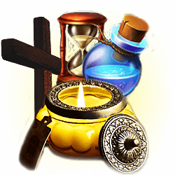

Можно увидеть меня лично, услышать мой голос, почувствовать темп общения и понять, подходит ли вам мой формат работы.
Раиса Владимировна
Таролог, любовная ведьмочка

Личное знакомство
Видео-приветствие
Посмотрите короткое видео, чтобы понять мою подачу и с какими вопросами ко мне обращаются.
С чем ко мне обращаются
Когда отношения, семья или удача начинают рушиться, сначала важно увидеть причину.
Ко мне пишут, когда отношения рушатся, человек отдалился, в семье постоянные ссоры, появилось подозрение на чужое влияние, порчу, сглаз, зависть или нужно понять, что происходит на самом деле.
Любимый человек отдалился
Смотрю, почему он молчит, что чувствует и есть ли шанс вернуть контакт.
Муж или жена ушли из семьи
Разбираю причины разрыва, обиды, холод и возможность воссоединения.
Появилась соперница или соперник
Проверяю влияние третьих лиц и то, что скрыто в отношениях.
Постоянные ссоры и холод
Смотрю, что разрушает связь и почему разговоры уже не помогают.
Подозрение на порчу, сглаз или зависть
Провожу диагностику негатива и смотрю, почему удача будто отвернулась.
Что я смотрю в вашей ситуации
Сначала я делаю просмотр, а уже потом подбираю формат работы.
Я смотрю не только внешние события, но и то, что за ними стоит: чувства, влияние третьих лиц, порчу, сглаз, зависть, возможность возврата, энергетические привязки и дальнейшие шаги.
Чувства и намерения человека
Смотрю, что он чувствует, что скрывает и почему ведёт себя именно так.
Шанс на возврат
Разбираю, есть ли возможность вернуть связь, мужа, жену или любимого человека.
Влияние третьих лиц
Проверяю соперницу, соперника, зависть, чужое вмешательство и энергетические привязки.
Негатив, порчу и сглаз
Смотрю, есть ли тяжёлый фон, наведённое влияние или повторяющиеся разрушительные ситуации.
Что мешает примирению
Показываю обиды, страхи, ошибки и скрытые причины, которые не дают связи восстановиться.
Какой формат работы подходит
Подсказываю, с чего начать: расклад, диагностика, работа по фото, защита или любовная работа.
Услуги
Основные направления моей работы
Гадание и Таро
Смотрю чувства, события, скрытые причины, будущее и возможное развитие ситуации.
Любовная магия
Работаю с чувствами, притяжением, охлаждением, ссорами и восстановлением связи.
Приворот, отворот и заговоры
Подбираю формат работы под ситуацию: возврат, отвод соперницы, усиление связи или снятие чужого влияния.

Возврат и воссоединение
Смотрю причины разрыва, обиды, влияние третьих лиц и возможность вернуть мужа, жену или любимого человека.
Порча, сглаз и защита
Провожу диагностику негатива, зависти, сглаза и ставлю защиту от повторного воздействия.
Удача, будущее и работа по фото
Смотрю ближайшие события, денежную удачу, дороги, перемены и ситуацию по фотографии.
Почему мне доверяют
Я работаю лично, конфиденциально и сначала смотрю саму ситуацию.
Мне важно увидеть причину, а не просто назвать услугу. Я смотрю любовь, возврат, защиту, порчу, будущее и работу по фото в одном контексте вашей истории.
Работаю конфиденциально
Личные детали остаются между нами, без лишних вопросов и чужого внимания.
Смотрю ситуацию по фото
Если нужно, я беру фото и смотрю чувства, связь, негатив, соперников и дальнейшие шаги.
Объясняю, что видно
После просмотра я говорю, что открывается, какой формат подходит и с чего лучше начать.
Фотогалерея
Атмосфера моего пространства, где я работаю с картами, смотрю ситуации и провожу личные приёмы.


.jpeg)


Сертификаты
Подтверждение обучения и дополнительной практики.
Я регулярно прохожу курсы, практику, дополнительные обучения и повышаю квалификацию.
Отзывы
Несколько коротких откликов от моих клиентов
Результаты индивидуальны и могут отличаться в каждом конкретном случае.
После просмотра стало понятно, почему мужчина пропал и что мешает ему выйти на связь. Я перестала метаться и написала уже спокойно.
Возврат общенияЯ подозревала соперницу, но не понимала, насколько она влияет. На разборе всё сложилось в одну картину.
СоперницаВ семье были ссоры почти каждый день. После диагностики я увидела, где настоящая причина холода и обид.
Семейный конфликтОбращалась из-за ощущения негатива и постоянных срывов. Получила чёткий просмотр и понимание, нужна ли защита.
Диагностика негативаСмотрели отношения по фото. Ответ был короткий, но очень точный: стало понятно, почему человек меня избегает.
Работа по фотоМне важно было понять, делать ли шаг к примирению. После разбора появился ясный ориентир, без давления и страха.
Что делать дальшеFAQ
Что важно знать перед обращением ко мне
Можно ли обратиться ко мне онлайн?
Да. Я работаю онлайн: вы описываете ситуацию, а я смотрю запрос и отвечаю в удобном формате.
Что нужно для начала?
Напишите мне в WhatsApp и коротко опишите, что произошло. Если для просмотра понадобится фото, я скажу об этом отдельно.
Если я не знаю, какой обряд или расклад нужен?
Так бывает часто. Я сначала смотрю ситуацию и только потом подсказываю, какой формат работы уместен.
Есть ли гарантия результата?
Я честно смотрю, что открывается в вашей ситуации, объясняю возможности и не обещаю того, чего не вижу.
Связь со мной и запись на консультацию
Опишите ситуацию в WhatsApp
Я посмотрю, с чего лучше начать: расклад, диагностика, работа по фото, защита, возврат или другой формат.